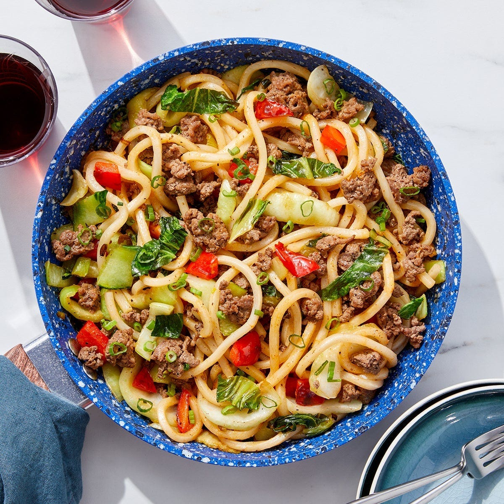

Jude's Noods

Description
You’ll make this dish all in one pan by tossing ground beef, tender noodles, and crisp
vegetables together with an umami-rich blend of soy glaze, sesame oil, and spicy gochujang.
Ingredients
- 10oz Ground Beef or Pork
- 1/2lb Udon Noodles
- 1 bell pepper
- 2 scallions
- 10oz Baby Bok Choy
- 1 TBS Sesame Oil
- 1 TBS Rice Vinegar
- 2 tsps Gochujang
- 2 TBS Soy Glaze
Steps
- Prepare ingredients and make sauce.
- Cook beef.
- Cook vegetables
- Finish the stir fry and servce your dish
s
Back to Home